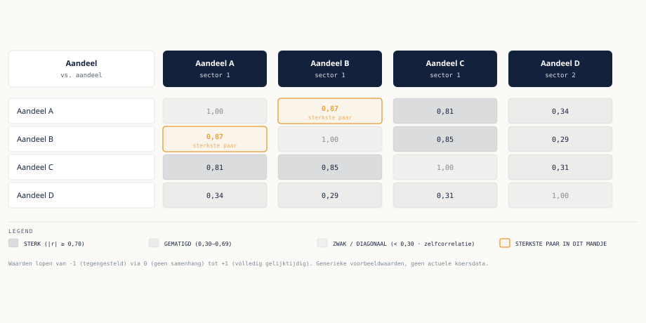

Cursus Systematisch Traden · Niveau 2 (Systematisch) · Deel 20 van 30
Portfolio-basis Diversificatie en correlatie.
Zodra u meerdere posities tegelijk aanhoudt, telt niet alleen het risico van elke positie apart, maar ook het gecombineerde risico van de portfolio als geheel. Dit deel introduceert correlatie: waarom vijf posities die er gespreid uitzien, in de praktijk soms nauwelijks meer zijn dan één grote positie in vijf tickets. U leert het verschil tussen diversificatie op papier en effectieve diversificatie, een praktische vuistregelmatige correlatie-inschatting, en hoe dit zich verhoudt tot de kill switch en uw tradingplan.
6secties
±50 minleestijd + werkboek
4controlevragen
N2Systematisch
Disclaimer. Dit is educatieve content en geen financieel advies. Traden en beleggen kennen verliesrisico, inclusief het risico dat u uw volledige inzet verliest. Er worden geen concrete actuele tickers, sectorbenamingen of correlatiewaarden als aanbeveling gebruikt; alle voorbeelden zijn generiek.
Tot dusver heeft deze cursus vooral gekeken naar het risico van één individuele trade: de stop-afstand, de positiegrootte, de kans op winst of verlies van die ene positie. Zodra u meerdere posities tegelijk aanhoudt — wat bij een swingstrategie met een houdperiode van één tot drie weken al snel het geval is — verandert de vraag. Het gaat dan niet meer alleen om het risico van elke positie afzonderlijk, maar om het risico van de portfolio als geheel: wat gebeurt er met uw totale account als meerdere posities tegelijk tegen u bewegen?
Dit is geen ander risicomodel dan wat u al kent — de sizing-methodes uit deel 14 en de kill switch uit deel 15 blijven onverkort gelden — maar er komt een extra dimensie bij die alleen zichtbaar wordt zodra u naar de portfolio als geheel kijkt: correlatie.
02
Wat correlatie betekent
⏱ 8 min
Correlatie meet in hoeverre twee instrumenten zich gelijktijdig in dezelfde richting bewegen. Een hoge positieve correlatie betekent: als het ene instrument stijgt, stijgt het andere doorgaans ook, en omgekeerd bij een daling. Een lage of negatieve correlatie betekent dat de bewegingen van de twee instrumenten weinig of tegengesteld met elkaar samenhangen.
Correlatie is relevant omdat vijf posities die stuk voor stuk een acceptabel risico lijken te dragen (elk binnen de 1% risicogrens van uw sizing-regel), tóch een veel groter gecombineerd risico kunnen dragen als ze sterk met elkaar gecorreleerd zijn. Als alle vijf posities long staan in aandelen uit dezelfde sector, en die sector krijgt een gezamenlijke tegenslag (bijvoorbeeld een sectorbreed sentimentverslechtering), dan verliest u mogelijk vrijwel gelijktijdig op alle vijf posities — in de praktijk draagt u dan het risico van in wezen één grote positie, verspreid over vijf tickets.
03
Diversificatie op papier versus effectief
⏱ 10 min
Het is een veelgemaakte denkfout om "veel verschillende posities aanhouden" gelijk te stellen aan "gespreid risico dragen". Vijf posities in vijf verschillende large-cap technologieaandelen uit dezelfde regio zien er gediversifieerd uit — vijf verschillende bedrijven, vijf verschillende tickers — maar als die vijf aandelen historisch sterk gecorreleerd bewegen (wat voor aandelen binnen eenzelfde sector en regio vaak het geval is), is de effectieve diversificatie veel kleiner dan het aantal posities doet vermoeden.
Diversificatie op papier kijkt naar het aantal en de namen van de posities. Effectieve diversificatie kijkt naar hoe onafhankelijk die posities daadwerkelijk van elkaar bewegen. Voor een systematische trader is dat laatste de relevante maatstaf: het gaat niet om hoeveel verschillende tickers er in de portfolio staan, maar om hoeveel onafhankelijke risicobronnen er daadwerkelijk zijn.

Figuur 20-1 — Correlatiematrix van een aandelenmandje: vier tickers ogen gespreid, maar A en B bewegen met 0,87 vrijwel gelijktijdig — effectieve diversificatie is kleiner dan het aantal posities doet vermoeden
Een correlatiematrix zoals in de figuur toont voor elk paar instrumenten in een mandje een waarde tussen −1 en +1: dicht bij +1 betekent sterk gelijktijdig bewegen, dicht bij 0 betekent weinig samenhang, dicht bij −1 betekent overwegend tegengesteld bewegen. Voor een systematische trader is een dergelijke matrix een praktisch hulpmiddel om te zien welke combinaties van posities daadwerkelijk risico spreiden, en welke combinaties in wezen dezelfde weddenschap verdubbelen.
Controlevraag
Uit Werkboek deel 20, Opdracht 2
1Een trader houdt vijf posities aan: vier large-cap technologieaandelen uit dezelfde regio en één ETF die een brede technologie-index volgt. (a) Hoeveel posities zijn dit "op papier"? (b) Is dit waarschijnlijk effectief goed gediversifieerd? Motiveer. (c) Wat zou u aanraden als deze trader zijn effectieve diversificatie wil vergroten, zonder het aantal posities per se te verkleinen?Toon antwoord
a) Vijf posities op papier.
b) Waarschijnlijk niet effectief goed gediversifieerd: vier technologieaandelen uit dezelfde regio zijn onderling waarschijnlijk sterk gecorreleerd, en de ETF voegt daar een vijfde, eveneens sterk gecorreleerde laag aan toe (de ETF bevat mogelijk zelfs een deel van dezelfde aandelen). Effectief gedraagt deze portfolio zich dichter bij één grote, geconcentreerde technologiepositie dan bij vijf onafhankelijke risico's.
c) Om de effectieve diversificatie te vergroten zonder per se het aantal posities te verkleinen, zou de trader kunnen kiezen voor aandelen uit andere sectoren en/of regio's in plaats van (nog meer) technologieaandelen uit dezelfde regio — bijvoorbeeld een mix van sectoren met een lagere onderlinge correlatie.
04
Een eenvoudige correlatie-inschatting
⏱ 9 min
U hoeft voor een eerste, praktische inschatting geen formele statistiek te berekenen. Enkele generieke vuistregels die in de praktijk goed werken:
Aandelen binnen dezelfde sector en regio zijn doorgaans sterker gecorreleerd dan aandelen uit verschillende sectoren en regio's.
Een ETF die een brede index volgt, is per definitie sterk gecorreleerd met de individuele grote aandelen die in die index zwaar meewegen.
In periodes van marktbrede stress (bijvoorbeeld een scherpe algehele correctie) neemt de correlatie tussen vrijwel alle aandelenposities tijdelijk toe, ook tussen posities die normaal gesproken weinig samenhang vertonen — spreiding werkt dus het minst goed juist op de momenten waarop u die het hardst nodig heeft. Dit is een bekend verschijnsel en geen reden om diversificatie te laten varen, wel een reden om er niet blind op te vertrouwen als enige vangnet.
Voor wie verder wil dan een vuistregelmatige inschatting: in niveau 3, waar met Python en pandas wordt gewerkt (deel 25), is het berekenen van een daadwerkelijke correlatiecoëfficiënt tussen twee prijsreeksen een eenvoudige toepassing van diezelfde tools.
Controlevraag
Uit Werkboek deel 20, Opdracht 1
1Beoordeel per paar fictieve posities of u een hoge, gemiddelde of lage correlatie zou verwachten, en licht in één zin toe waarom: (1) twee large-cap technologieaandelen uit dezelfde regio; (2) een large-cap aandeel en een brede aandelenindex-ETF waarin dat aandeel een zwaar gewicht heeft; (3) een aandeel uit de energiesector en een aandeel uit de defensieve consumentengoederensector, uit verschillende regio's; (4) twee posities in hetzelfde aandeel, één long via de broker-rekening en één long via het CFD-account.Toon antwoord
1. Hoge correlatie. Beide bewegen doorgaans mee met dezelfde sector- en regiofactoren (bijvoorbeeld rentesentiment richting technologieaandelen).
2. Hoge correlatie. Een index-ETF is per definitie sterk gecorreleerd met de aandelen die er zwaar in meewegen.
3. Lage tot gemiddelde correlatie. Verschillende sector (cyclisch versus defensief) en verschillende regio verkleint de gemeenschappelijke risicofactoren, al blijft er een zekere marktbrede samenhang bestaan.
4. Zeer hoge correlatie (vrijwel perfect). Het gaat om hetzelfde onderliggende aandeel via twee verschillende productstructuren — de koersbeweging is nagenoeg identiek, dit is in wezen dezelfde positie in dubbele omvang, geen spreiding.
Controlevraag
Uit Werkboek deel 20, Opdracht 4
2Leg in maximaal vier zinnen uit waarom diversificatie juist tijdens periodes van marktbrede stress minder goed werkt dan normaal, en waarom dat geen reden is om diversificatie helemaal los te laten.Toon antwoord
In periodes van marktbrede stress reageren beleggers vaak breed en gelijktijdig — bijvoorbeeld door posities massaal af te bouwen, ongeacht sector of regio — waardoor de correlatie tussen vrijwel alle aandelenposities tijdelijk toeneemt. Dat betekent dat posities die normaal weinig samenhang vertonen, juist op dat moment wél gelijktijdig kunnen verliezen. Dit is geen reden om diversificatie los te laten, omdat diversificatie in normale marktomstandigheden nog altijd het risico verkleint — het is wel een reden om diversificatie niet als enige vangnet te beschouwen en de kill switch (deel 15) als aanvullende bescherming te blijven gebruiken.
05
Portfoliorisico en de kill switch
⏱ 8 min
De high-watermark kill switch uit deel 15 werkt op het niveau van het totale account, niet per losse positie — dat betekent dat hij automatisch al rekening houdt met het gecombineerde effect van meerdere posities: als vijf gecorreleerde posities tegelijk verliezen, telt dat gezamenlijke verlies mee in de drawdown die de kill switch bewaakt. Wat de kill switch niet doet, is u vooraf waarschuwen dát u een geconcentreerd, weinig gediversifieerd risico opbouwt — die inschatting moet u zelf maken, bij voorkeur als onderdeel van uw tradingplan (deel 17): bijvoorbeeld door een regel op te nemen die het aantal gelijktijdige posities in eenzelfde sector begrenst, ongeacht hoe aantrekkelijk elke individuele setup op zichzelf oogt.
Kern
De kill switch grijpt in ná het feit, op accountniveau. Een portfolioregel over concentratie grijpt in vóórdat u de posities überhaupt opent. Beide zijn nodig; ze vervangen elkaar niet.
06
Toepassing op Fenna's blueprint
⏱ 7 min
Fenna's swingstrategie richt zich op large-cap Europese en Amerikaanse aandelen en ETF's. Na dit deel voegde ze een eenvoudige portfolioregel toe aan haar tradingplan: maximaal twee gelijktijdige posities binnen dezelfde sector, en bij twijfel over de sectorindeling van een aandeel kiest ze voor de voorzichtigste interpretatie. Deze regel verandert niets aan haar entry- of exit-regels — die blijven ongewijzigd — maar begrenst wel hoe geconcentreerd haar portfolio op enig moment kan worden, ook wanneer meerdere aantrekkelijke setups zich toevallig in dezelfde sector tegelijk voordoen.
Controlevraag
Uit Werkboek deel 20, Opdracht 3
1Formuleer, naar het voorbeeld van Fenna in sectie 6 van de reader, een concrete portfolioregel voor uw eigen tradingplan (deel 17): een begrenzing op het aantal gelijktijdige posities binnen een zelfde sector, regio, of andere gemeenschappelijke risicofactor die u relevant acht.Toon antwoord
Individueel, geen vast modelantwoord. Controleer bij uzelf: is de regel concreet en toetsbaar (een maximumaantal, een expliciete definitie van "zelfde sector" of een andere gemeenschappelijke factor), in plaats van een vage intentie ("ik let op spreiding")?